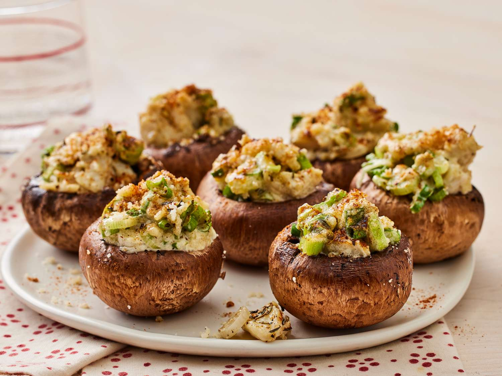

Crab stuffed mushrooms

These delightful treats make a fantastic addition to any holiday gathering or a cozy dinner at home. Each delicious bite is sure to impress your guests, leaving them reaching for more. And you can feel smug knowing just how effortlessly they came together!
Not to mention, if you end up with left overs they freeze beautifully!
Ingredients
- 2 tablespoons butter
- 2 tablespoons minced green onion
- ½ cup dry bread crumbs
- ¼ cup shredded Monterey Jack cheese
- 1 egg, beaten
- 1 teaspoon dried dill weed
- 1 teaspoon lemon juice
- ½ cup butter, melted
- 1 ½ pounds fresh button mushrooms, stems removed
- ½ cup shredded Monterey Jack cheese
- ¼ cup dry white wine
Steps
- Preheat oven to 400 degrees F (200 degrees C).
- Melt 2 tablespoons butter in a skillet; cook and stir green onion until softened, about 2 minutes. Transfer green onion to a bowl. Stir in crabmeat, bread crumbs, 1/4 cup Monterey Jack cheese, egg, lemon juice, and dill weed until well mixed.
- Pour 1/2 cup melted butter in a 9x13-inch baking dish; turn mushroom caps in butter to coat. Fill mushroom caps with the crab mixture and sprinkle with remaining 1/2 cup Monterey Jack cheese. Pour white wine into baking dish.
- Bake in preheated oven until cheese is melted and lightly brown, 15 to 20 minutes.